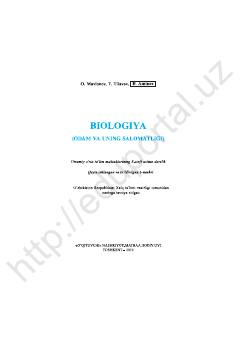

OVInson anatomiyasi va salomatligi asoslariga bag'ishlangan o'quv qo'llanma.
Ushbu kitob 8-sinf o'quvchilari uchun mo'ljallangan bo'lib, inson organizmi anatomiya va fiziologiyasi hamda salomatlikni saqlash asoslarini o'rgatadi. Matnda inson tanasining tuzilishi va uning funksiyalari haqida ilmiy ma'lumotlar berilgan. Kitob o'quvchilarning biologiya va tibbiyotga oid bilimlarini kengaytirishga xizmat qiladi.